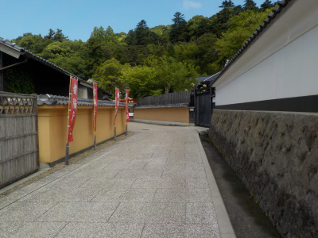
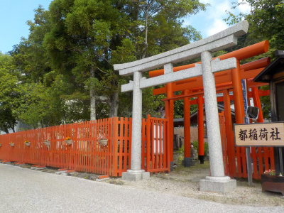
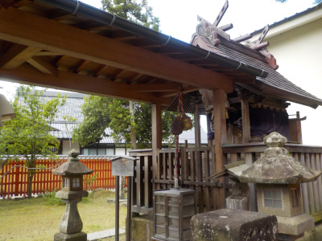
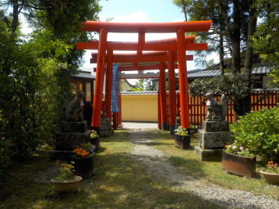

都稲荷社周辺は綺麗です。
2022/06/12

出雲大社のすぐそばです。素敵な道ですが、誰も歩いていませんでした。
グーグルのストリートビューでも見れますが、とってもきれいな道です。稲佐の浜に歩いて行く人はここを通ればいいのにって思いました。

ちょっと歩くと都稲荷社に到着です。
赤色が映えてますね。

大きさは小さいですが、落ちついた雰囲気のある場所でした。

帰ろうとすると、狐がこちらを向いていました。何か引かれたのでここでも写真を撮りました。